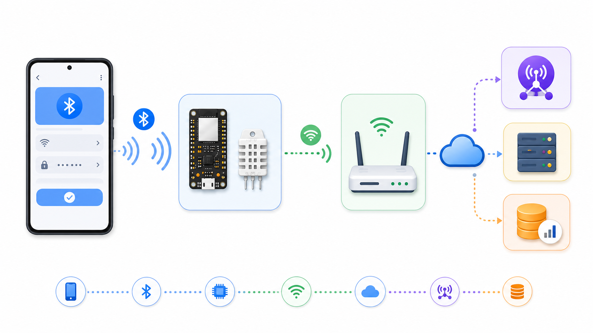
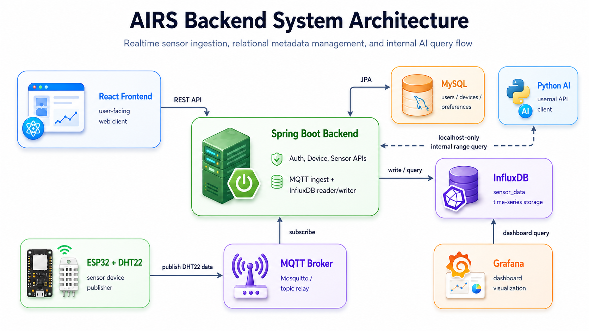

AIRS Android Study Guide
Wi-Fi Provisioning 앱 아키텍처
Android 휴대폰을 실제 제품 기준으로 두고, Kotlin + Jetpack Compose + MVVM + Repository 구조로 Wi-Fi provisioning 앱을 설명합니다. mock BLE 흐름으로 앱 내부 상태를 검증하고, 실제 실행 경로에는 Native BLE 구현을 연결했습니다.

1. 지금 구현한 범위
구현 기준은 Android 휴대폰입니다. 현재 Android 휴대폰이 없으면 Samsung 태블릿을 임시 테스트 장비로 사용할 수 있지만, 앱 구조와 사용자 흐름은 휴대폰 기준으로 유지합니다. AIRS 노드가 없을 때는 mock repository와 단위 테스트로 앱 내부 흐름을 검증하고, 노드 확보 후 실제 scan/GATT/write/notify를 확정합니다.
노드 없이 구현
Compose 화면, ViewModel 상태, Repository 계약, Mock BLE 흐름, Wi-Fi JSON payload 생성.
휴대폰으로 검증
Bluetooth 권한 실제 동작, 실제 BLE scan 시작, 앱 설치와 runtime permission 흐름.
휴대폰 + 노드 필요
AIRS 노드 Wi-Fi 연결, MQTT publish, backend 또는 broker에서 end-to-end 확인.
2. 전체 시스템에서 Android 앱의 위치
기존 backend 아키텍처에서는 ESP32 노드가 Wi-Fi에 연결되어 MQTT Broker로 sensor data를 publish합니다. 이번 Android 작업은 그 이전 단계, 즉 노드가 Wi-Fi 정보를 모를 때 앱이 BLE로 초기 설정값을 전달하는 부분입니다.

Android 앱 -> BLE -> AIRS 노드 -> Wi-Fi -> MQTT Broker -> Spring Boot Backend -> InfluxDB/MySQL
3. 기술 스택과 도구가 연결되는 방식
| 기술/도구 | AIRS에서 하는 일 | 현재 구현 파일 |
|---|---|---|
| Android Studio | 프로젝트를 열고 Gradle Sync, Preview, Emulator 실행을 관리합니다. | IDE 도구 |
| Gradle | Compose, Lifecycle, Kotlin 의존성을 연결하고 앱을 빌드합니다. | android/app/build.gradle.kts, libs.versions.toml |
| Kotlin | Java처럼 class와 function을 쓰지만, data class, val/var, lambda를 더 자주 씁니다. | ProvisioningModels.kt, ProvisioningViewModel.kt |
| Compose | XML 대신 Kotlin 함수로 UI를 만듭니다. | ProvisioningScreen.kt |
| MVVM | ViewModel이 상태를 들고 있고, 화면은 그 상태를 읽어서 그립니다. | ProvisioningViewModel.kt |
| Repository | BLE 통신 세부 구현을 화면과 분리합니다. | BleProvisioningRepository.kt, MockBleProvisioningRepository.kt |
4. 앱 내부 아키텍처
앱 코드는 아래 방향으로 흐릅니다. 사용자가 버튼을 누르면 UI가 ViewModel 함수를 호출하고, ViewModel은 Repository를 통해 mock BLE 동작을 실행한 뒤 상태를 바꿉니다. 상태가 바뀌면 Compose가 화면을 다시 그립니다.
User click
-> ProvisioningScreen callback
-> ProvisioningViewModel function
-> BleProvisioningRepository interface
-> MockBleProvisioningRepository
-> uiState changes
-> Compose recomposes screen5. Kotlin 문법을 Java/C 기준으로 보기
| Kotlin | Java/C와 비교 | AIRS 코드 예시 |
|---|---|---|
val |
한 번 정하면 바꿀 수 없는 변수입니다. Java의 final에 가깝습니다. |
val node = uiState.selectedNode |
var |
값을 다시 넣을 수 있는 변수입니다. | var uiState by mutableStateOf(...) |
data class |
값을 담는 DTO/struct에 가깝습니다. 생성자, equals, toString이 자동 생성됩니다. | data class AirsBleNode(...) |
object |
싱글턴 객체입니다. Java의 static utility class처럼 쓸 수 있습니다. | object WifiConfigPayload |
Flow |
시간에 따라 여러 값을 흘려보내는 stream입니다. | mock scan 결과와 provisioning status를 순서대로 emit합니다. |
@Composable |
Compose 화면 함수라는 표시입니다. XML layout 대신 Kotlin 함수가 UI가 됩니다. | @Composable fun ProvisioningScreen(...) |
6. 핵심 코드 line-by-line 설명
모든 자동 생성 리소스까지 설명하면 초점이 흐려지므로, AIRS Wi-Fi provisioning 구현에 직접 필요한 파일만 설명합니다.
6.1 MainActivity.kt
| 줄 | 코드 | 설명 |
|---|---|---|
| 1 | package com.airs.android | 이 파일이 com.airs.android 패키지에 속한다는 뜻입니다. |
| 3-10 | import ... | Activity, Compose, ViewModel, AIRS 화면/테마 클래스를 가져옵니다. |
| 12 | class MainActivity : ComponentActivity() | 앱의 첫 Activity입니다. Java의 extends ComponentActivity와 같습니다. |
| 13 | private val provisioningViewModel by viewModels() | Activity 생명주기에 맞는 ViewModel을 하나 생성합니다. 화면 회전 같은 상황에서도 상태를 보존하기 좋습니다. |
| 15 | override fun onCreate(...) | Activity가 처음 만들어질 때 Android가 호출하는 함수입니다. |
| 17 | enableEdgeToEdge() | 상태바/내비게이션바 영역까지 자연스럽게 그리도록 하는 Android UI 설정입니다. |
| 18 | setContent { ... } | XML layout 대신 Compose 화면을 Activity에 붙입니다. |
| 19 | AIRSTheme(dynamicColor = false) | AIRS 앱 공통 색상/타이포그래피 테마를 적용합니다. |
| 20 | ProvisioningRoute(viewModel = provisioningViewModel) | Wi-Fi provisioning 화면을 띄우고 ViewModel과 연결합니다. |
6.2 ProvisioningModels.kt
| 줄 | 코드 | 설명 |
|---|---|---|
| 3-8 | data class AirsBleNode(...) | 앱이 발견한 AIRS BLE 노드 하나를 표현합니다. 이름, RSSI, firmware version을 담습니다. |
| 10-13 | data class WifiCredentials(...) | 사용자가 입력한 SSID와 password를 묶어서 전달하기 위한 값 객체입니다. |
| 15-24 | enum class ProvisioningStep | 현재 화면 단계입니다. 시작, 검색, 연결, Wi-Fi 입력, 전송, 성공, 실패로 나눕니다. |
| 26-32 | enum class ProvisioningStatusType(val label: String) | 노드가 알려주는 진행 상태 종류입니다. 각 enum 값은 UI에 보여줄 한국어 label을 가집니다. |
| 34-37 | data class ProvisioningStatus(...) | 상태 종류와 상세 메시지를 함께 담습니다. |
| 39-50 | data class ProvisioningUiState(...) | 화면에 필요한 모든 상태를 한 곳에 모읍니다. Compose는 이 값을 보고 화면을 그립니다. |
| 51-53 | val canSendWifiConfig get() = ssid.isNotBlank() | SSID가 있을 때만 전송 버튼을 활성화하기 위한 계산 속성입니다. |
6.3 BleProvisioningRepository.kt
| 줄 | 코드 | 설명 |
|---|---|---|
| 8 | interface BleProvisioningRepository | BLE 기능의 계약입니다. UI/ViewModel은 실제 BLE인지 mock인지 몰라도 됩니다. |
| 9 | fun scanForNodes(): Flow<List<AirsBleNode>> | 주변 노드를 검색하고, 검색 결과 목록을 stream으로 보냅니다. |
| 11 | suspend fun connect(node: AirsBleNode) | 선택한 노드에 연결합니다. suspend는 시간이 걸리는 비동기 함수라는 뜻입니다. |
| 13-16 | fun provisionWifi(...): Flow<ProvisioningStatus> | Wi-Fi 정보를 전달하고, 노드의 진행 상태를 순서대로 받습니다. |
6.4 ProvisioningViewModel.kt
| 줄 | 코드 | 설명 |
|---|---|---|
| 19-21 | class ProvisioningViewModel(...) | UI 상태와 사용자 이벤트를 처리하는 MVVM의 ViewModel입니다. 기본값으로 mock repository를 사용합니다. |
| 22-23 | var uiState by mutableStateOf(...) | Compose가 관찰할 상태입니다. 값이 바뀌면 화면이 다시 그려집니다. |
| 25-26 | private var scanJob / provisioningJob | 진행 중인 coroutine 작업을 기억했다가 중복 실행을 취소하기 위한 변수입니다. |
| 28-47 | fun startScan() | 검색 버튼을 눌렀을 때 실행됩니다. repository에서 mock 노드 목록을 받아 UI 상태에 넣습니다. |
| 49-69 | fun selectNode(node) | 사용자가 노드를 선택하면 연결 중 상태로 바꾸고, 연결 성공 시 Wi-Fi 입력 단계로 이동합니다. |
| 71-81 | updateSsid / updatePassword / togglePasswordVisible | 입력창 값과 비밀번호 표시 여부를 변경합니다. |
| 83-129 | fun sendWifiConfig() | SSID/PW를 검증하고, mock repository에 Wi-Fi 설정 전달을 요청합니다. 상태가 오면 성공/실패 화면으로 이동합니다. |
| 131-146 | retryFromStart / backToWifiInput | 처음부터 다시 하거나 Wi-Fi 입력 단계로 돌아가기 위한 복구 함수입니다. |
7. 현재 앱과 테스트에서 확인할 수 있는 흐름
AIRS 노드 검색 시작을 누를 수 있습니다.8. 휴대폰 기준 실제 실행 경로
테스트/학습 경로
BleProvisioningRepository
-> MockBleProvisioningRepository
-> 가짜 scan/connect/write/status실제 실행 경로
BleProvisioningRepository
-> AndroidBleProvisioningRepository
-> BluetoothLeScanner
-> BluetoothGatt
-> Characteristic write/notifyBleProvisioningRepository 인터페이스에만 의존합니다.
그래서 mock 테스트와 실제 BLE 실행 경로가 같은 ViewModel/화면 구조를 공유합니다.